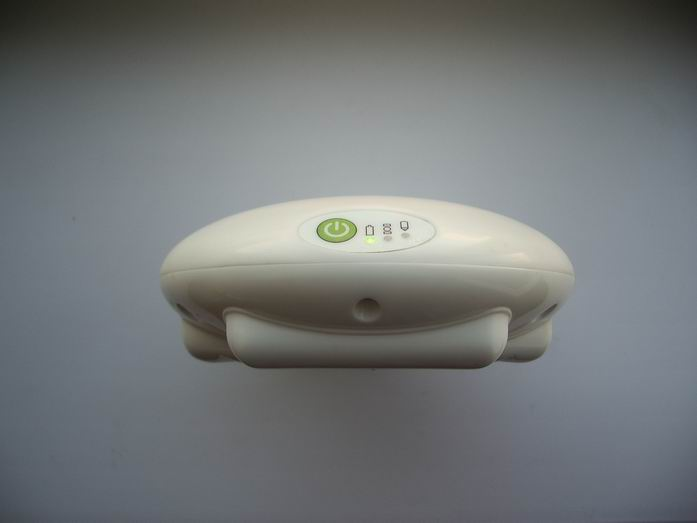

| model: | Mirapract |
| type:
|
single frequency survey-grade GPS receiver |
| power:
|
3 or 6 AA alkaline or rechargeable batteries |
| memory: | microSD memory card for storing static raw data |
| modes: | static only (obs time approx: 20min - 20km) |
| **kinematic methods are not supported, more at the bottom of the page | |
| accuracy: | 5mm + 1mm/1km (static) |
| interface: | internal bluetooth module and external serial port for programming |
| antenna: | internal GPS L1 with relative calibration by NGS |
| post processing: | any software that accepts RINEX files |
| weight: | 235 grams (0.518 lb or 8.28oz) (without batteries) |
| thread: | 5/8" X 11 (standard surveying thread, 11 threads per inch) |
| mechanical: | (click
the pictures to enlarge) |
 |
 |
 |
| top view, diameter 124mm | bottom view | front view, height: 50mm |
| 1 set includes: | 1.
receiver 2. case 3. tree adapters with rubber tieing string 4. memory card with USB or SD adapter this set is shown on the picture to the right: not included: data processing software, batteries, tripods, tribracks, pogo etc. |
 |
| price: | 1500$ for one receiver set specified above (not selling yet) | |
| test raw data: | staticRawData.zip (2.4Mb) kinematicRawData.zip (3.7Mb) | |
| Mirapract Tools 2.0.3 Program for converting raw data from the receiver to RINEX format, has a few other useful functions, works on most Windows OS versions. |
| features: |
| * converts raw data from Mirapract receiver to
RINEX format * has GPS calendar, by choosing date from calendar the day of the year etc. are calculated * in real time covert raw data from the receiver to RTCM 3.0 format * launches following programs: - crnx2rnx.exe: converts compact rinex files to rinex format - interpo.exe : interpolates GPS RINEX files from 30s to 15s, 10s, 5s 1s, etc. |
| Mirapract Tools 2.0.3 Setup.exe (6.9Mb) |
screenshot: |
| MiraField 1.1 Program for Java phones, collects static and kinematic data from the receiver | ||
| features: | ||
| This program connects to Mіrapract receiver via bluetooth and collects Static and Kinematic data. In order to install the program copy MiraField1_1.jar to your phone and runt it, the installation process should start. If it does not copy also MiraField1_1.jad file and try again. The phone has to have a bluetooth module. The Java Virtual Mashines on some phones do not give access to the bluetooth module for this program. I this case when you run the program you will get "Java error" message. The program works well on Nokkia phones. This program does not work on Android or iPhone. | ||
| MiraField1_1.jar (0.1Mb) MiraField1_1.jad (<0.1Mb) | ||
screenshots: |
||
 |
||
| choosing survey style | varieties of kinematic | measuring |
| **
Regardless of the fact that MiraField 1.1 writes data from the receiver
to the phone with no errors the kinematic methods are still not
reliable. These two methods are not supported: continuous and stop
& go. I have not figured out where the problem is. Nither Trimble
Business Center nor GNSS Solutions yield correct vectors. MiraField 1.1 should be used only for static method if there is a need to do so, fo example: if you left the receiver memory card at home. Now I am developing my own RTK program an I hope I will find out where the problem is. |
||